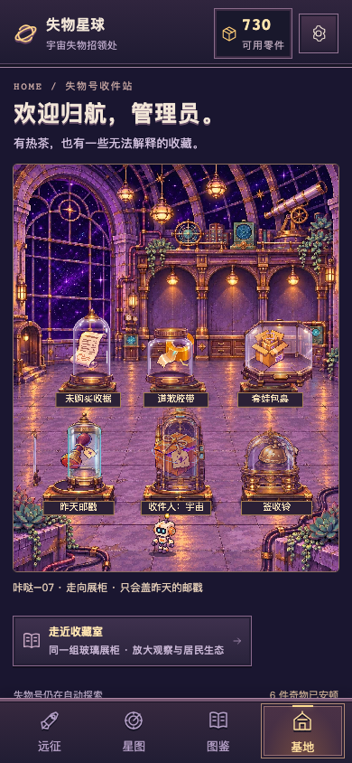
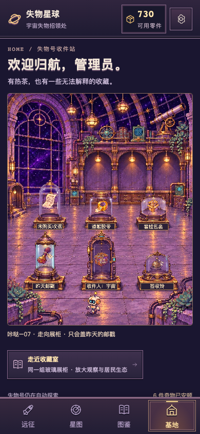
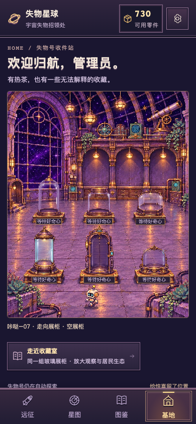
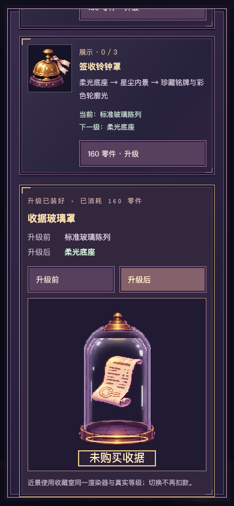

玻璃框、藏品与台架真实对齐
v0.2.3 · 2d70b6d · 手机反馈、修正与验证 · Draft PR #2
用户424659实机已确认机器人走动，同时报告展柜未对齐。以下为校准后实际生产构建的390×844桌面移动触控仿真，视频按真实墙钟，不是手机录像。新校准包仍需扫码；昼夜挂机反馈尚待用户确认。
手机反馈前/校准后

0.2.2：源格中心误作基座中心，前玻璃带第二个底座
0.2.3：逐柜落在实际台面，藏品保持在内腔，前玻璃只绘制反光真实连续整理与六件近景
同源28秒近景裁切。完整32秒内走向邮戳、胶带等不同展柜，开罩、取出、检查、放回和返回。所有近景是实际Canvas原生裁切并最近邻放大，非另画概念图。
空柜与实际升级后

未知物品仍为空柜实际购买后外观
同一注册布局绘制近景升级对照同一远征昼夜证据
本次布局修正未改昼夜逻辑。下面保留明确标注的0.2.2 / 14cc368完整实录，0.2.3仍全套测试：同一原远征Canvas、240秒白天＋60秒夜晚＋清晨，双槽自动防守，无独立H5跳转。
86秒同源转场 · 42秒防守近景 · 日/昏/夜/晨截图与结果